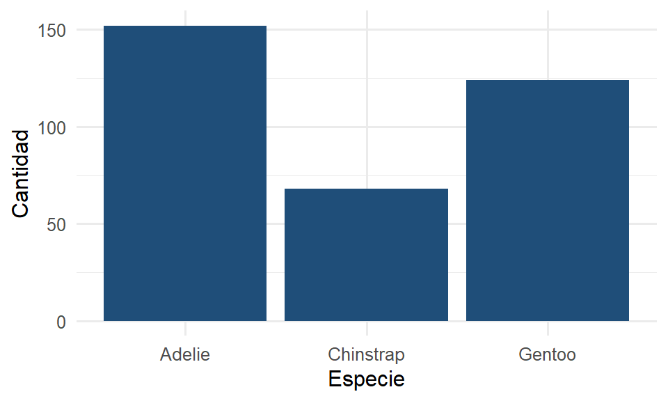
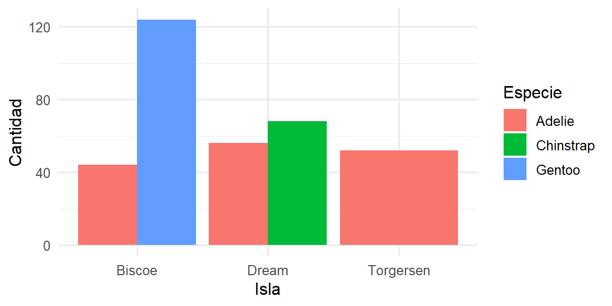
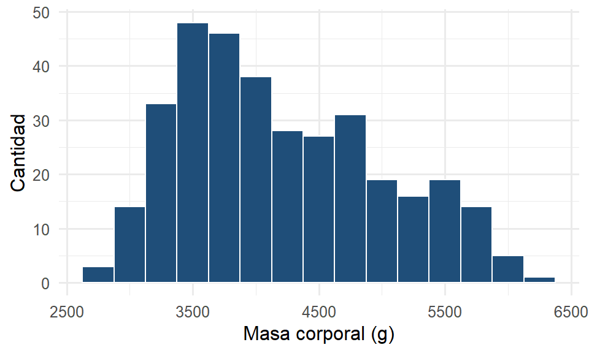
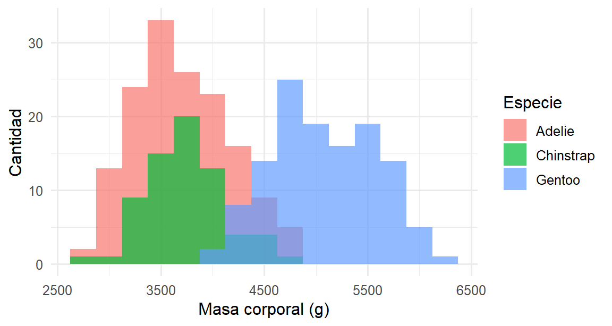

library(palmerpenguins)
glimpse(penguins)
#> Rows: 344
#> Columns: 8
#> $ species <fct> Adelie, Adelie, Adelie, Adelie, Adelie, Adelie, Adel…
#> $ island <fct> Torgersen, Torgersen, Torgersen, Torgersen, Torgerse…
#> $ bill_length_mm <dbl> 39.1, 39.5, 40.3, NA, 36.7, 39.3, 38.9, 39.2, 34.1, …
#> $ bill_depth_mm <dbl> 18.7, 17.4, 18.0, NA, 19.3, 20.6, 17.8, 19.6, 18.1, …
#> $ flipper_length_mm <int> 181, 186, 195, NA, 193, 190, 181, 195, 193, 190, 186…
#> $ body_mass_g <int> 3750, 3800, 3250, NA, 3450, 3650, 3625, 4675, 3475, …
#> $ sex <fct> male, female, female, NA, female, male, female, male…
#> $ year <int> 2007, 2007, 2007, 2007, 2007, 2007, 2007, 2007, 2007…1 Exploración de los datos
TipObjetivos del capítulo
- Distinguir individuos y variables en una tabla de datos.
- Clasificar una variable por su tipo y su escala de medición.
- Diferenciar un estudio observacional de un experimento.
- Cargar datos en R y elegir la gráfica adecuada según el tipo de variable.
1.1 ¿Qué es la estadística?
Usamos la palabra estadística todos los días (“las estadísticas del equipo”, “según las estadísticas”) casi siempre para referirnos a números sueltos. Pero la estadística es más que eso. Es la ciencia (y el arte) de obtener conocimiento a partir de datos. Nos permite decir algo sobre un conjunto grande cuando solo hemos observado una parte.
Conviene dividir esa ciencia en tres grandes tareas, que además son la columna vertebral de este curso:
- Análisis de los datos (Parte I). Lo que tradicionalmente llamamos estadística descriptiva: organizar, resumir y visualizar lo que tenemos frente a nosotros.
- Producción de los datos (Parte II). De dónde salen los datos importa tanto como qué hacemos con ellos. Un muestreo mal hecho o un experimento mal diseñado arruinan cualquier análisis posterior.
- Inferencia (Parte III). A partir de una muestra, hacer afirmaciones (bien fundamentadas y con su margen de incertidumbre) sobre la población de la que provino.
Este capítulo abre la Parte I: aprender a mirar los datos.
1.2 Individuos, variables y la tabla de datos
Casi todo en este curso empieza con una tabla: los renglones son los individuos (o unidades de observación) y las columnas son las variables (lo que medimos de cada individuo).
Trabajemos con un conjunto real: mediciones de 344 pingüinos de tres especies del archipiélago Palmer, en la Antártida. Es nuestro laboratorio de enseñanza: limpio, ordenado y siempre disponible.
Cada renglón es un pingüino (el individuo); cada columna es una variable: su especie, la isla donde se le observó, medidas de su pico y aleta, su masa corporal, su sexo y el año. Una tabla así, con un individuo por renglón y una variable por columna, se llama datos ordenados (tidy data), y es la forma en que R espera recibirlos.
NotaDe dónde vienen estos datos
Los recolectó la Dra. Kristen Gorman en la estación Palmer, en el archipiélago Palmer de la Antártida, durante tres veranos australes (2007 a 2010). Los nidos se marcaron antes de la puesta del primer huevo y se midió a los dos adultos de cada pareja: largo y profundidad del pico con calibrador (\(\pm 0.1\) mm), largo de la aleta derecha con regla (\(\pm 1\) mm) y masa con balanza de resorte.
Vale la pena tenerlo presente: detrás de cada renglón de esta tabla hubo alguien en el hielo con un calibrador en la mano. Y las celdas vacías (NA) también tienen causa (días en que el clima impidió llegar a las colonias), no son un descuido.

bill_length_mm y bill_depth_mm. Ilustración: Artwork by @allison_horst.Definir cómo se mide una variable es parte del trabajo estadístico. Si dos personas midieran el pico de forma distinta, los datos no serían comparables. Por eso el protocolo especifica el instrumento, su precisión y hasta cuál de las dos aletas se mide.
NotaInterpretación
Antes de calcular nada, responde: en la tabla, ¿qué es un individuo y qué es cada variable? Confundir esto es la fuente número uno de errores. En los datos de galletas del curso, por ejemplo, ¿el individuo es una marca o una calificación de un juez? (Es cada calificación: un renglón por juez y marca.)
1.3 Tipos de variables y escalas de medición
No todas las variables son iguales, y el tipo determina qué podemos hacer con ellas.
A grandes rasgos hay dos familias:
- Categóricas (o cualitativas): clasifican al individuo en grupos. La especie o la isla del pingüino.
- Cuantitativas (o numéricas): miden una cantidad. La masa corporal o el largo de la aleta.
Con más detalle, cada variable vive en una de cuatro escalas de medición:
| Escala | ¿Qué permite? | Ejemplo |
|---|---|---|
| Nominal | Solo distinguir categorías, sin orden | Especie del pingüino; marca de galleta |
| Ordinal | Categorías con orden, pero sin distancia definida | Nivel de agrado (bajo/medio/alto); escalaridad de un dolor |
| Intervalo | Orden y distancias iguales, pero sin cero absoluto | Temperatura en °C (0 °C no es “ausencia de temperatura”) |
| Razón | Orden, distancias y un cero que significa ausencia | Masa, longitud, tiempo, conteos |
La escala importa porque decide qué operaciones tienen sentido. Promediar temperaturas corporales (razón) es válido; “promediar” especies (nominal) no lo es.
Tip¿Qué técnica usar?
El tipo de variable decide casi todo lo que sigue en el curso: qué gráfica hacer, qué resumen numérico calcular y, más adelante, qué prueba aplicar. Antes de cualquier análisis, clasifica las variables.
1.4 Tipos de estudio: ¿de dónde vienen los datos?
Aunque este capítulo trata del análisis, conviene desde ya distinguir cómo se producen los datos, porque cambia lo que podemos concluir.
- En un estudio observacional medimos a los individuos sin intervenir. Comparar la temperatura de lagartijas urbanas y de campo es observacional. No asignamos nosotros dónde vive cada lagartija.
- En un experimento el investigador aplica tratamientos y se observa la respuesta. La cata de galletas es un experimento. Nosotros decidimos qué marca prueba cada juez y en qué orden.
La diferencia es enorme para la interpretación. Un experimento bien diseñado permite hablar de causa y efecto; un estudio observacional, en general, solo de asociación. Volveremos a esto en la Parte II.
También conviene separar tres formas de obtener datos: un censo mide a toda la población; una muestra mide solo a una parte (bien elegida, para representar al todo); un experimento produce datos nuevos bajo condiciones controladas.
NotaInterpretación
Si un titular dice “las personas que toman café viven más”, conviene preguntarse: ¿fue un experimento o un estudio observacional? Casi siempre es observacional, así que no podemos concluir que el café cause mayor longevidad: quizá quienes toman café tienen otros hábitos en común.
1.5 Primer contacto con R y con nuestros datos
Los pingüinos ya viven dentro de un paquete de R. Los conjuntos aplicados del curso están en archivos .csv en la carpeta datos/. Se leen así:
galletas <- read.csv("datos/galletas.csv")
head(galletas)
AdvertenciaLos nombres de las columnas pueden cambiar al leer
R necesita que los nombres de columna sean nombres válidos, así que al leer un archivo sustituye por un punto todo lo que no puede usar. Una columna llamada Largo del pico (mm) llega como Largo.del.pico..mm., y entonces datos$Largo del pico no encuentra nada.
Con los archivos del curso no ocurre, porque se nombraron pensando en eso, pero sí ocurre seguido con archivos que vienen de Excel o de una encuesta. Conviene correr names() después de cada lectura y usar el nombre que R reporta.
Para conocer una tabla nueva, tres funciones bastan al inicio: glimpse() (un vistazo a todas las columnas), head() (los primeros renglones) y summary() (un resumen rápido).
summary(galletas)
#> juez orden marca agrado
#> Min. : 1 Min. :1.00 Length:100 Min. :3.00
#> 1st Qu.: 7 1st Qu.:1.75 Class :character 1st Qu.:5.00
#> Median :13 Median :2.50 Mode :character Median :6.00
#> Mean :13 Mean :2.50 Mean :6.26
#> 3rd Qu.:19 3rd Qu.:3.25 3rd Qu.:7.00
#> Max. :25 Max. :4.00 Max. :9.00Nótese que R trató agrado como numérica (correcto: es una calificación en escala 1–9) y marca como texto. Muchas veces querremos decirle a R que una columna es categórica; en R eso se llama factor:
galletas$marca <- factor(galletas$marca)
levels(galletas$marca)
#> [1] "Chokis" "GreatValue" "Lors" "Oreo"¿Qué se gana con eso? Un factor guarda, además de los valores, la lista de categorías posibles. La diferencia se nota al filtrar:
solo_oreo <- galletas[galletas$marca == "Oreo", ]
table(solo_oreo$marca)
#>
#> Chokis GreatValue Lors Oreo
#> 0 0 0 25En solo_oreo no quedó ni una galleta de las otras tres marcas, y aun así la tabla las sigue reportando con cero casos, porque el factor recuerda todos los valores posibles y no solo los presentes. Si la columna fuera texto simple, esas categorías desaparecerían de la tabla y nadie notaría que faltan.
1.6 Gráficas para variables categóricas
La pregunta natural sobre una variable categórica es ¿cuántos hay de cada categoría? La respuesta se ve en un diagrama de barras.
ggplot(penguins, aes(x = species)) +
geom_bar(fill = "#1F4E79") +
labs(x = "Especie", y = "Cantidad")
Cada barra cuenta cuántos individuos caen en esa categoría. Podemos cruzar dos variables categóricas (especie e isla) coloreando o separando las barras:
ggplot(penguins, aes(x = island, fill = species)) +
geom_bar(position = "dodge") +
labs(x = "Isla", y = "Cantidad", fill = "Especie")
NotaInterpretación
La segunda gráfica ya cuenta una historia. La especie Gentoo solo aparece en Biscoe y Chinstrap solo en Dream, mientras que Adelie está en las tres islas. Una gráfica bien hecha responde una pregunta de un vistazo.
1.7 Gráficas para variables cuantitativas
Para una variable cuantitativa la pregunta es ¿cómo se distribuyen los valores? La herramienta básica es el histograma: parte el rango en intervalos y cuenta cuántos individuos caen en cada uno.
ggplot(penguins, aes(x = body_mass_g)) +
geom_histogram(binwidth = 250, fill = "#1F4E79", color = "white") +
labs(x = "Masa corporal (g)", y = "Cantidad")
Al leer un histograma nos fijamos en tres cosas: el centro (¿alrededor de qué valor se acumulan los datos?), la dispersión (¿qué tan esparcidos están?) y la forma (¿simétrica?, ¿sesgada?, ¿con uno o varios picos?). Esta masa se ve con dos montículos, lo que suele ser una pista de que hay grupos distintos mezclados (las especies). Separándola por especie lo confirmamos:
ggplot(penguins, aes(x = body_mass_g, fill = species)) +
geom_histogram(binwidth = 250, alpha = 0.7, position = "identity") +
labs(x = "Masa corporal (g)", y = "Cantidad", fill = "Especie")
1.7.1 Laboratorio: el ancho de clase cambia la historia
¿Cuántos intervalos debe tener un histograma? No hay una respuesta única, y la elección importa: con muy pocos se pierde el detalle, con demasiados solo se ve ruido. Al mover el deslizador se observa cuándo aparecen, o desaparecen, los dos montículos de la masa corporal.
NotaInterpretación
Con un ancho muy grande (600 g o más) el histograma se aplana en una sola barra ancha y la estructura desaparece. Con uno muy pequeño (50 g) cada barra tiene poquísimos pingüinos y solo se ve ruido. En un rango intermedio —alrededor de 200 a 300 g— se distinguen con claridad dos montículos, la pista de que hay grupos mezclados. Moraleja: un histograma no es un dato objetivo, es una decisión de quien grafica; conviene probar varios anchos antes de concluir.
Tip¿Qué técnica usar?
Primera entrada de nuestro mapa de decisión, según el tipo de variable a graficar:
| Quiero ver… | Tipo de variable | Gráfica |
|---|---|---|
| Cuántos hay de cada categoría | 1 categórica | Diagrama de barras |
| Cómo se distribuyen los valores | 1 cuantitativa | Histograma |
| Relación entre dos categóricas | 2 categóricas | Barras agrupadas |
En el próximo capítulo agregaremos los resúmenes numéricos (media, mediana, desviación) y el diagrama de caja.
1.8 Resumen
Empezamos por lo más importante y lo más olvidado: entender los datos antes de tocarlos. Identificamos individuos y variables, clasificamos cada variable por su tipo y escala, distinguimos estudios observacionales de experimentos, y elegimos la gráfica según el tipo de variable. Todo lo demás en el curso se apoya en esto: si clasificas bien las variables, casi siempre sabrás qué hacer con ellas.
1.9 Ejercicios
Tipos y escalas. Para cada variable de
penguins(species,island,bill_length_mm,body_mass_g,sex,year), indica si es categórica o cuantitativa y en qué escala de medición vive.Individuos y variables. Abrir
datos/lagartijas.csvconread.csv(). ¿Qué es un individuo en esa tabla? Lista sus variables y clasifícalas.Observacional o experimental. Clasificar cada estudio y justificar en una frase:
- Se registra la temperatura corporal de lagartijas encontradas en la ciudad y en el campo.
- Se asigna al azar a cada juez un orden para probar cuatro marcas de galletas y se mide su agrado.
- Se comparan las calificaciones de estudiantes que asistieron a asesorías contra las de quienes no.
Barras. Con los datos de
hongos_sustrato.csv, hacer un diagrama de barras del número de bolsas porsustrato. ¿Está balanceado el experimento?Histograma y forma. Graficar el histograma de
flipper_length_mmde los pingüinos conbinwidth = 5. Describir centro, dispersión y forma. ¿Se observan indicios de más de un grupo?Escala de medición (opción múltiple). El nivel de agrado en una escala “bajo / medio / alto” es una variable de escala: (a) nominal, (b) ordinal, (c) intervalo, (d) razón. Justificar.
TipSoluciones y retroalimentación
1. species e island: categóricas nominales (no hay orden natural entre especies). sex: categórica nominal. bill_length_mm, body_mass_g: cuantitativas de razón (el cero significa ausencia y las razones tienen sentido: 4000 g es el doble de 2000 g). year: es numérica, pero funciona como intervalo (no existe un “año cero” absoluto) y en la práctica se usa como categórica ordinal. Cuidado con el reflejo de tratar todo número como cuantitativo: year es el ejemplo clásico de un número que no se promedia con sentido.
2. El individuo es cada lagartija. Variables: id (etiqueta, no es dato analizable), habitat (categórica nominal), temp_corporal, masa_g, lhc_mm (cuantitativas de razón) y frec_cardiaca (cuantitativa de razón, discreta). Error típico: pensar que el individuo es el hábitat; el hábitat es una característica de cada lagartija, no la unidad.
3. (a) Observacional: solo se mide dónde ya vivían; no asignamos hábitat. (b) Experimental: nosotros asignamos al azar el orden de cata, es decir, intervenimos. (c) Observacional: los estudiantes decidieron por su cuenta asistir, no fueron asignados. La clave siempre es la misma pregunta: ¿quién decidió el tratamiento, el investigador o el propio individuo?
4. Con ggplot(hongos, aes(x = sustrato)) + geom_bar() se ven 25 bolsas por sustrato: el experimento está balanceado (mismo número de réplicas por tratamiento). El balance simplifica el análisis y da la misma precisión a cada comparación.
5. El histograma de flipper_length_mm con binwidth = 5 muestra un centro cerca de 197 mm, dispersión aproximada de 172 a 231 mm, y una forma claramente bimodal: dos montículos. Sí hay indicios de más de un grupo, y son las especies (los Gentoo tienen aletas notablemente más largas). Este ejercicio es el mismo fenómeno del laboratorio del ancho de clase: la forma revela estructura oculta.
6. La respuesta es (b) ordinal. Hay un orden claro (bajo < medio < alto), pero las distancias entre niveles no están definidas. No podemos afirmar que la diferencia entre “bajo” y “medio” sea igual que entre “medio” y “alto”. Por eso no tiene sentido promediar estas etiquetas directamente. Nota práctica: la escala hedónica 1–9 de la cata de galletas sí se trata como cuantitativa por convención en análisis sensorial, aunque estrictamente sea ordinal; es una decisión que conviene hacer explícita.